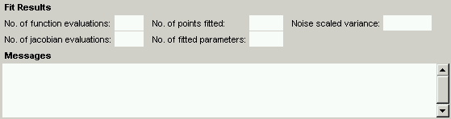

|  |
After fitting the data, the number of function evaluations, the number of jacobian evaluations, the total number of data points used in the fit, and the number of fitted parameters are displayed. In addition, the noise scaled variance of the fit is displayed. This latter value is a measure of the goodness of the fit; the closer to 1 the better. Specifically, the noise scaled variance is the sum of the squares of the ratio of the difference between the data and the fit and the noise level. Therefore, a value of 5.0 indicates that the error in the fit is about five times the size of the noise. A value of 1.0 is as good as one could hope for, although values less than 1.0 are possible if the noise is not truly Gaussian or if the noise level is over-estimated. Conversely, non-Gaussian noise or an under-estimated noise level may result in a noise scaled variance which is higher than it should be. It is possible to have relatively high values (on the order of 10) for the noise scaled variance and still have a visually good fit of the data, particularly if, say, just the peaks are missed by the fitted curves. The percentage contribution of each sweep to the overall variance is displayed to the right of each sweep number in the Data Display Panel.
When the user asks NEUROFIT to fit the data, there are several possible outcomes. The algorithm may terminate with
In addition, there are two other WARNING messages that may be issued along with any of the above.